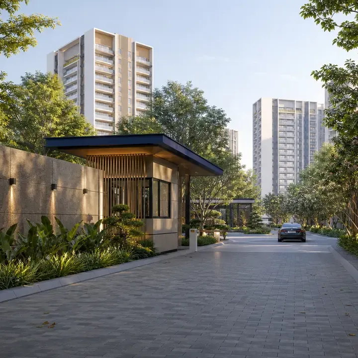
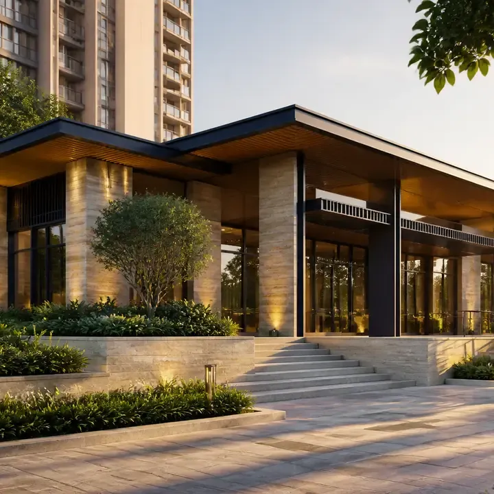
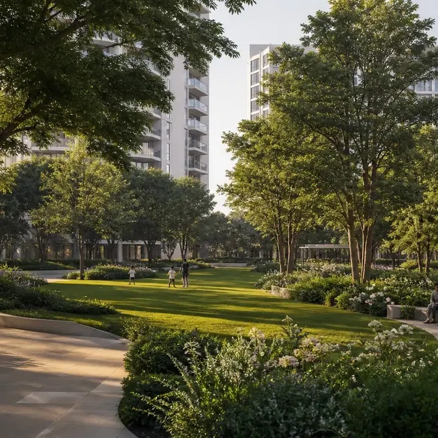
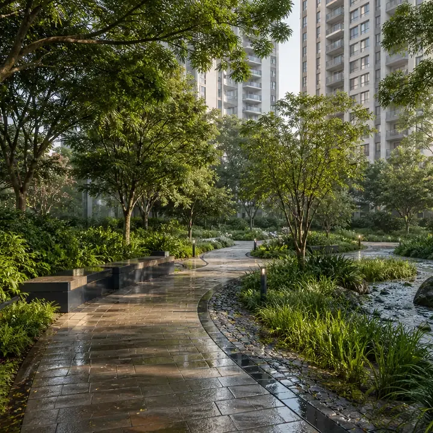
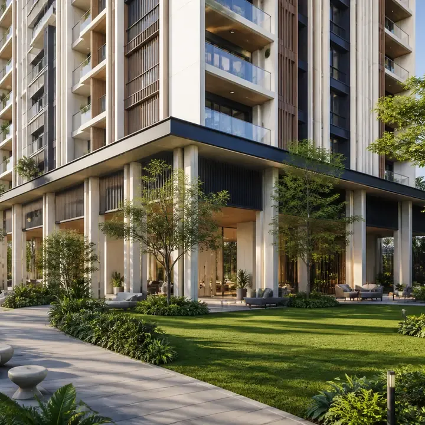
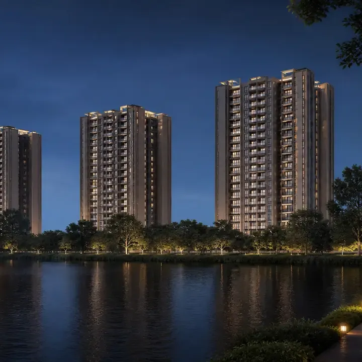
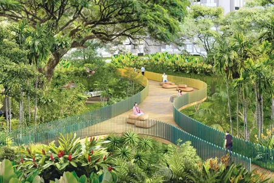
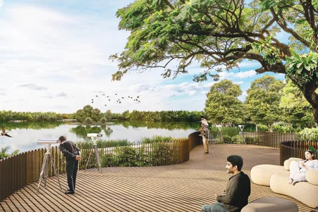
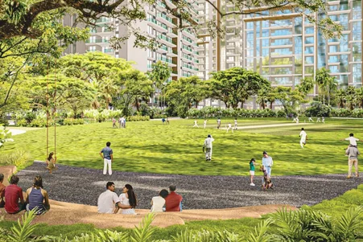
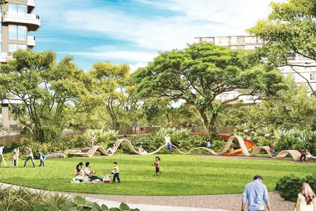

SNN Kudlu Image Gallery






Amenities at a glance




Arrival, clubhouse, gardens and the lake at SNN Kudlu.
What the SNN Kudlu pictures show
The six large pictures at the top of this page are indicative views of SNN Kudlu as planned. In order:
- Arrival court: a tree-lined arrival court and gatehouse, where residents and visitors drive in and are dropped off.
- Clubhouse: the clubhouse with a stone terrace and steps, seen at sunset.
- Central landscape: lawns and shade trees between the towers, part of about 10.9 acres of landscape.
- Rain garden: a stone path beside a planted stream bed.
- Tower entrance: a tower door opening onto a landscaped lawn.
- The towers at dusk: the towers across the lake, lit up as evening falls.
SNN Kudlu amenity pictures
The four smaller pictures show amenities planned at SNN Kudlu: the treetop trail, the wild-watching deck, the cricket lawn and the multi-functional lawn. They are pictures of the same amenities at another SNN Raj Corp apartment community, shown to give a sense of what is planned here.
Plans and layouts in pictures
For the homes, see the indicative 3D layouts of the 2 BHK, 3 BHK, 4.5 BHK compact and 4.5 BHK large on the floor plans page. For the site as a whole, the master plan page has an aerial view of the six towers around the central landscape beside the lake.
SNN Kudlu gallery summary
The gallery shows SNN Kudlu as planned: the arrival court, the clubhouse, the central landscape, the rain garden, a tower entrance and the towers by the lake, with pictures of four planned amenities. All images are for representation only.
SNN Kudlu gallery FAQs
Are these photographs of the finished SNN Kudlu?
No. SNN Kudlu is in pre-launch, so the pictures are indicative views of the planned community, and the amenity pictures come from another SNN Raj Corp apartment community.
Where can I see the SNN Kudlu floor plans?
On the floor plans page, as indicative 3D layouts of all four home formats.
Can I get more pictures of SNN Kudlu?
Register your interest to receive the brochure, or the latest project details if the brochure is not out yet.
Will the designs change?
The images are for representation only, and the detailed plans will be shared at launch.

SNN Kudlu Contact Us
Pre-launch: register now for the price list, floor plans and priority access at launch